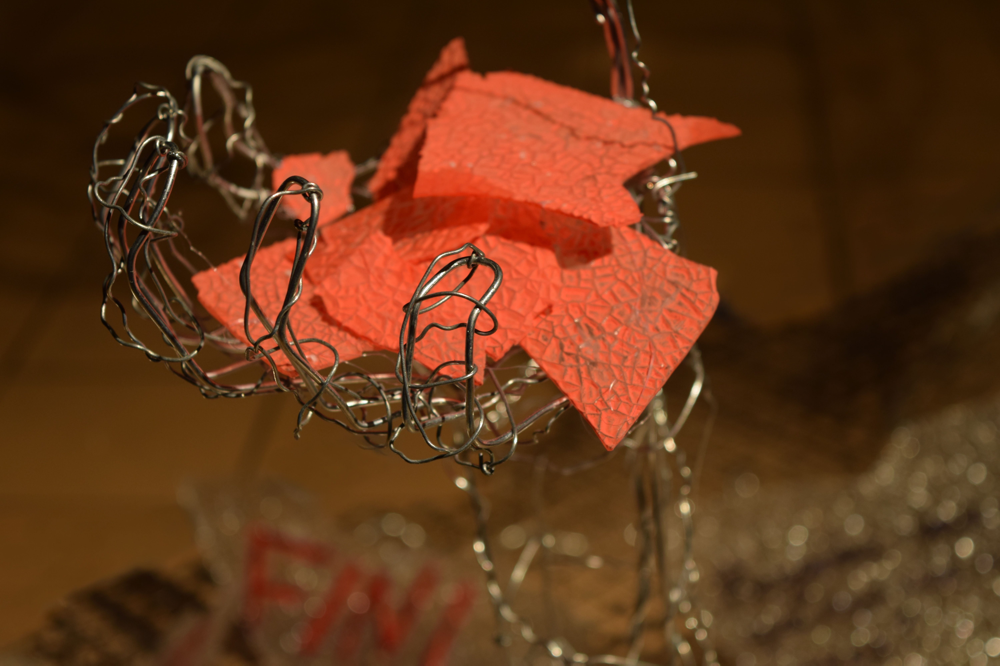
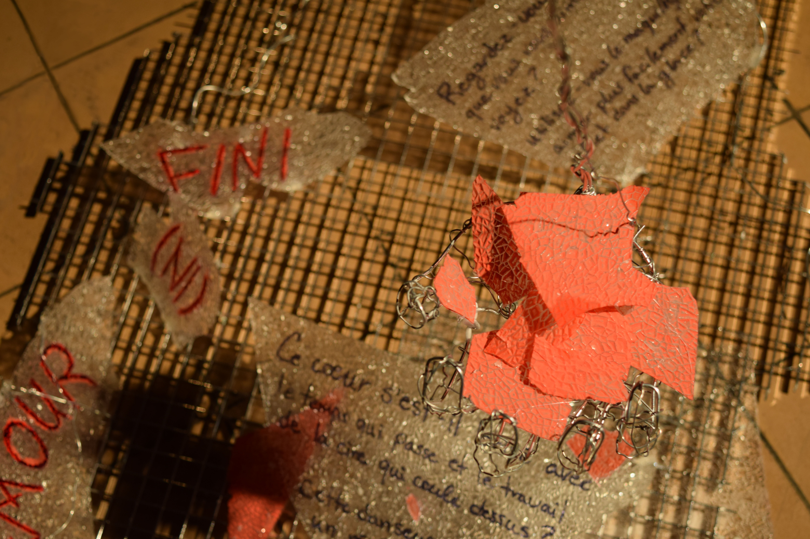
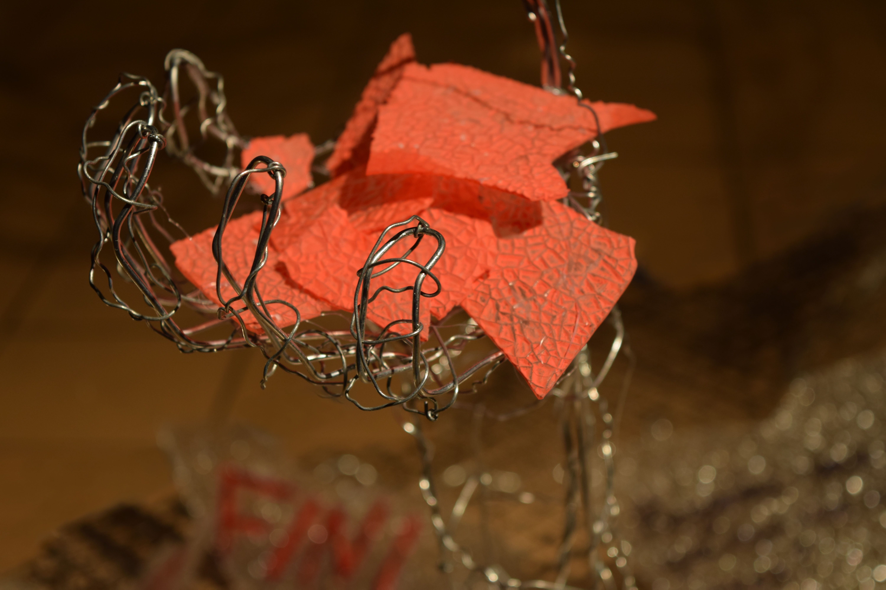
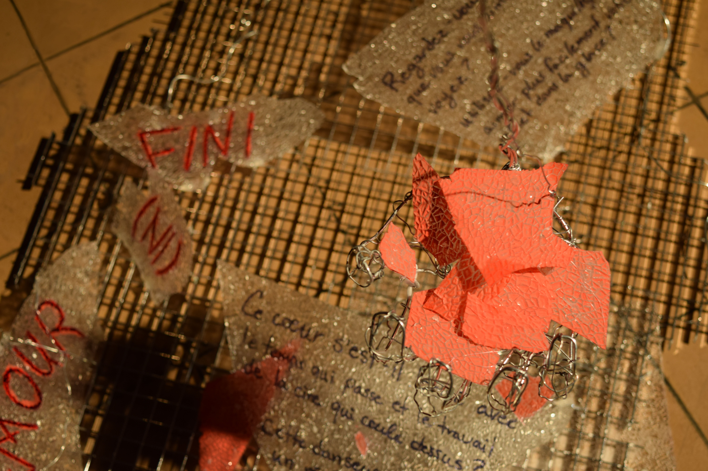
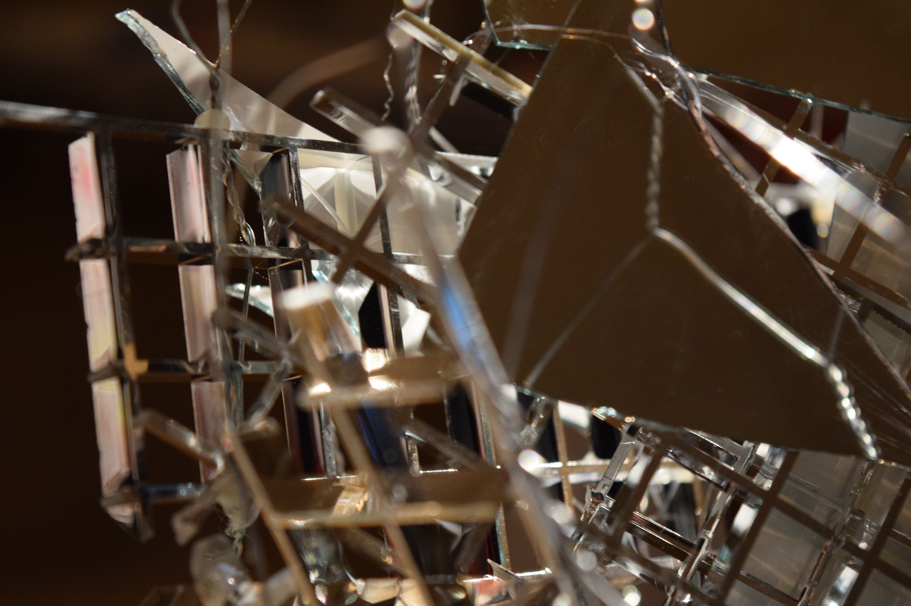
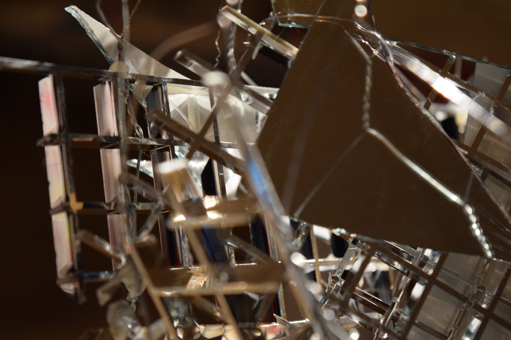
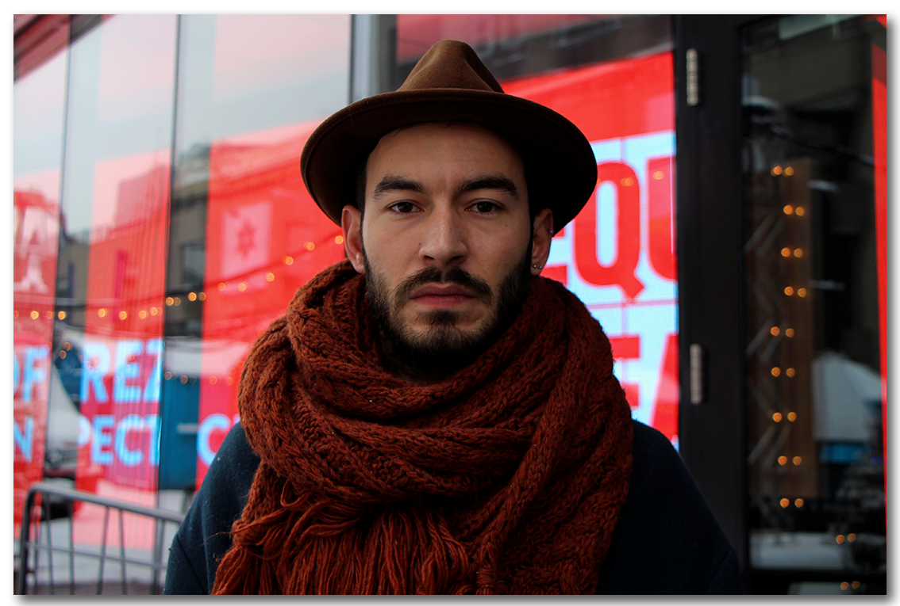
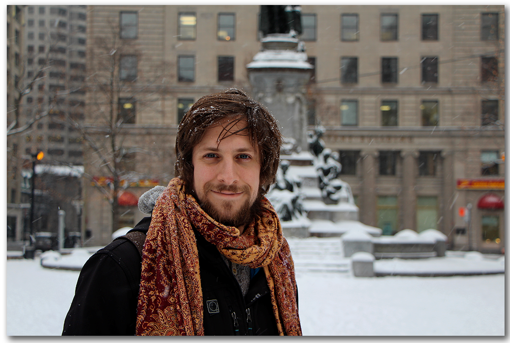
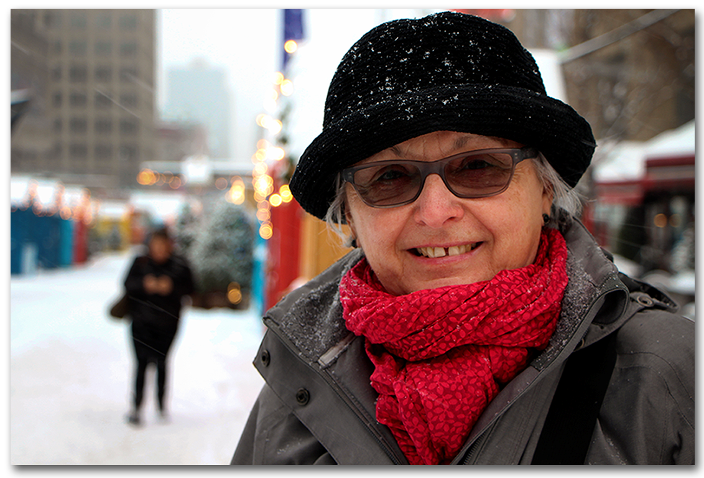
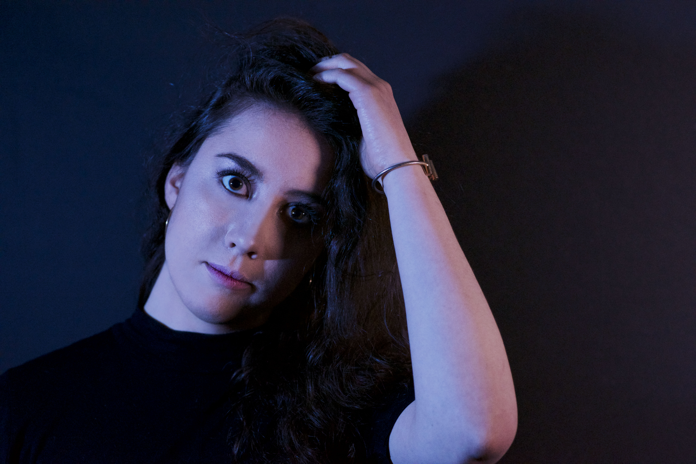

Un amour (in)fini
Les images suivantes montrent le fruit d'une création qui par le biais de manipulation de fils de fer forme une sculpture. Celle-ci représente une danseuse voyant le temps se liquéfier devant elle pour se reconstruire et former son passé. Les fracas de miroir reflètent une image déconstruite de soi ainsi que le corps séparé et inachevé de cette figure féminine, exprime le déchirement qu'un être peu avoir face aux thèmes du temps, de l'amour et de l'image de la femme. À la base de la sculpture, on peut y lire des questions abordant ces sujets. Ceci a pour but d'approfondir l'interprétation des récepteurs ainsi que de lancer des pistes de réflexion chez eux. Avec ce projet de session de mon DEC, j'ai voulu chercher diverses réactions de la part des récepteurs tout en créant un contact hors de l'ordinaire entre une création de fer possédant une forme humaine et de taille réelle. C'est une certaine volonté de voir les gens s'en approcher, observer et se déplacer tout autour pour en comprendre son sens.
 




 

La pensée du moment
C’est dans l’idée de fusionner l’écriture de nos pensées et l’immortalité d’un moment photographié que j’ai fait ce projet. Pendant quelques heures, je me suis baladée dans les rues de Montréal à la recherche de personnes qui voudraient bien prendre une photo de type portrait et répondre à une question. Sans leur expliquer plus mon but, j’ai exécuté mon projet. Je leur ait donc posé cette question: Que pensiez-vous durant la prise de la photo? Pour découvrir leurs réponses, je vous invite à survoler les différents portraits. |
 |
|
 |
 |
|
Essais photographiques
Pour ce projet, j’ai travaillé en collaboration avec Simon Desroches. Ensemble, nous avons fait diverses expérimentations en étant dans un environnement contrôlé puis en les modifiant sur Photoshop pour obtenir ce résultat. Notre thème principal était basé sur les néons pour faire ressortir la couleur de la lumière. Alors, ce sont avec de simples portraits que nous avons exploité cette thématique pour en faire un tout surprenant.
